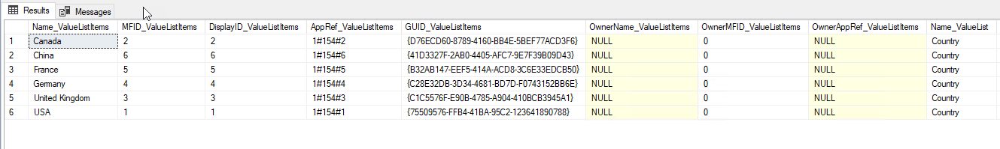

Metadata Management and Realignment Case Study¶
Brown MacFarlane, a steel merchant, selected MFSQL Connector for their integration between M-Files and Navision. Part of the project was to migrate and align the data from their previous ERP system with Navision and M-Files.
Navision is used for order management, inventory control and customer and supplier control. M-Files is used for advanced control of the related inventory certificates, and document control around all the ERP processes. Some business processes originates in Navision with M-Files being dependent on the data from Navision, and other cases such as confirmation of certificates Navision is dependent on the data that originates from M-Files.
The deployment of Navision involved updating supplier and inventory data directly from Navision with the MFSQL class tables, which in turn updates M-Files. The certification of inventory, processed in M-Files is continuously updated in SQL using MFSQL procedures. This data becomes available to Navision using extended views and query facilities in SQL to validate availability of inventory and supporting certification documents.
The Metadata management and alignment in M-Files focused primarily to transform the data originating from the previous ERP and fixing omissions and errors.
This process relied heavily on the power of SQL to compare, align, transform and update several sources and destinations of data tables. MFSQL Connector built in tools and capabilities significantly reduced to time to prepare for and perform the metadata extract and alignment, and subsequently updating of the tabled data to and from M-Files.
Metadata re-alignment during the course of the analysis and design of the integration played a part in the project. This case study highlights some of the procedure, methods and approaches applied during this project.
In essence data from an old stock management and ERP system was transformed to fit into the requirements of Navision. At the same time, the data already in M-Files from the old ERP system had to be transformed to align with the new requirements. New data had to be taken on and the metadata of the files had to align to ensure that users will find the right files when working in Navision. Navision was modified to allow for a custom search and display of the related files.
To achieve this, and in depth analysis of the structures in M-Files and both external systems had to be undertaken. Thereafter the rows and columns of every related table was compared, analysed and normalised. The new structures and changes of existing structured where applied to M-Files. Subsequently the existing data in M-Files where updated with the new structures. All of this laid the foundation for the new procedures to have a continuous update of Navision from M-Files and pull from Navision into M-Files.
The following sections describe in more detail how different capabilities of MFSQL Connector were deployed to support this metadata realignment project.
Understanding what is in M-Files¶
The following procedures and views was used the understand the metadata structure in M-Files
Fetch an overview of class objects in the entire vault with spMFObjectTypeUpdateClassIndex and show the results with the view MFvwObjectTypeSummary
EXEC dbo.spMFObjectTypeUpdateClassIndex @IsAllTables = 1
Select * from MFvwObjectTypeSummary

The volume of class data and the highest objid for each class can be determined from this table. The underlying data is in the MFAuditHistory table.
Next step is to update the metadata structure with spMFDropAndUpdateMetadata and survey the use of properties and classes in the vault with the view MFvwMetadataStructure. This view is a window into the structure for a number of angles:
Properties by class
Use of a property across all classes
Properties/Classes/Workflow/Valuelist with no aliases
Identifying duplicate aliases
Classes by Object type
Classes with required workflows
Properties and class used with an ownership relation
Examples of the select statement for the view are below.
The main aim for this exploration is to identify all the classes and properties to be included in the survey.
EXEC dbo.spMFDropAndUpdateMetadata
SELECT Property FROM dbo.MFvwMetadataStructure where class = 'Customer'
Select Class FROM dbo.MFvwMetadataStructure where Property = 'Customer'
SELECT distinct Class FROM dbo.MFvwMetadataStructure where ObjectType = 'Document'
SELECT Class FROM dbo.MFvwMetadataStructure WHERE Workflow_MFID IS NOT null
SELECT Property, class, Valuelist_Owner,IsObjectType FROM dbo.MFvwMetadataStructure where Valuelist_Owner IS NOT null
Next, update the includedInApp column in the MFClass table for all the classes to be included in the data analysis and then create all the class tables with one instruction spMFCreateAllMFTables.
UPDATE mc
SET mc.IncludeInApp = 1
FROM MFclass mc WHERE name IN ('Customer','Employment Agreement','Purchase Invoice')
EXEC dbo.spMFCreateAllMFTables @IncludedInApp = 1
Comparing and analyzing the data sources¶
The first step is to get access to the metadata. With the SQL server of the external system on the same network, a link server was setup for easy access. The pull of data from the external system may include other methods such as Boomi, Talend, Jitterbit or other tools. The key is to get the data into SQL Server tables. The next step is to get the M-Files data. This is where MFSQL Connector comes in. It allows for pulling metadata from M-Files without resorting to APIs. It also goes far beyond the capabilities of M-Files External Database Connector and is much easier to debug and control. All the related class tables have been created in the previous step, but any additional class tables can be created with spMFCreateTable
Updating the class tables from M-Files to SQL should take into account the volume of data in the tables and selecting the right procedure for the job is key:
Performing a quick update for smaller tables (< 10 000 records) or individual objects use spMFUpdateTable
Initializing larger tables in batch mode use spMFUpdateMFilesToMFSQL with UpdateTypeID = 0
Updating changed records for individual tables use spMFUpdateMFilesToMFSQL with UpdateTypeID = 1
Updating all class tables for changed records use spMFUpdateAllncludedInAppTables
Resetting a larger class table (only used in exception) use spMFUpdateTableinBatches
All of the above procedures has different types of switches and parameters for different scenarios. Check out the documentation of the individual procedures for further examples.
The following is a list of procedures, tips and technique scripts for data analysis and exploration.
Using schemas¶
The core MFSQL Connector procedures, tables, views and functions all use the default schema of dbo. We recommend that the custom schema is used for any objects created in the database. Any object in the schema of dbo will be replaced or overwritten when an upgrade of the Connector is performed.
Lookup views¶
- Using the MFvaluelist and MFValuelistitem tables will require a join on the MFValuelistID to get the right MFID of the related item. Similarly to get the MFID of the workflow state a join is required on between MFWorkflow and MFWorkflowState on the WorkflowID. Two helper procedures supports the creation of easy to use views for valuelists and workflows to improve useability.
Create valuelist lookup view with spMFCreateValueListLookupView
Create workflow state lookup with spMFCreateWorkflowStateLookupView
Create all related lookups with spMFCreateAllLookups Using this procedure will create a large number of views, irrespective if you will be using the views or not.
EXEC dbo.spMFCreateValueListLookupView @ValueListName = 'Country',
@ViewName = 'vwCountry',
@Schema = 'custom'
SELECT * FROM custom.vwCountry

Joining class tables¶
Class tables have several types of lookups. This include valuelists, valuelist items, other class tables, workflow, and workflow states. In each case the class table has two columns, one for the property value, and another for the ID of the property. When updating or inserting a record into a class table, only the ID of the lookup need to be set. The property value column is only for information and ease of use in the class table.
- The source column of the id to be used depends on the type of lookup.
In the case of valuelist, workflow state or workflow, the source column is the MFID in the tables MFValuelist, MFValuelistItems, MFWorkflow and MFWorkflowState
In the case of a class table, it is the Objid in the source class table.
SELECT * FROM MFContactPerson mcp
LEFT JOIN MFcustomer mc
ON mcp.customer_ID = mc.objid
LEFT JOIN custom.vwCountry vlc
ON mc.country_id = vlc.MFID_ValuelistItems
Identifying duplicates¶
Use ‘group by’ and ‘having’ method to identify duplicates
Select duplicateColumn from MFTableName
group by duplicateColumn
having count(*) > 1
Expand multi lookup property columns¶
Use ‘cross apply’ method with MFSQL function fnMFParseDelimitedString to split out a multi lookup Property to work with the individual members of the lookup.
Select * from MFClassTable
cross apply fnMFParseDelimitedString(Multicolumn, ',')
Making configuration changes to M-Files¶
Resetting metadata structure¶
It is common to make changes in M-Files admin during the process of configuring M-Files to align with the data of the system. The metadata structure must be re-synchronized after making changes in M-Files admin. Using spMFDropAndUpdateMetadata allows for different developer utilities to help with the process.
Setting the IsResetAll = 1 will cancel all custom settings in SQL (such as column names and class table names) and reset it to the default.
WithClassTableReset = 1 will drop all the class tables and recreate it. It will not refresh the data automatically.
WithColumnReset = 1 will recreate the columns for properties where the datatype of the properties were changed.
IsStructureOnly = 0 will update both structure changes and valuelist item changes.
Setting these parameters is cummulative. Normally, these switches will not be used in combination, but executed depending on the developer’s requirement.
EXEC dbo.spMFDropAndUpdateMetadata @IsResetAll = 1
EXEC dbo.spMFDropAndUpdateMetadata @WithClassTableReset = 1
EXEC dbo.spMFDropAndUpdateMetadata @WithColumnReset = 1
EXEC dbo.spMFDropAndUpdateMetadata @IsStructureOnly = 0
Making configuration changes from SQL¶
In this use case valuelist items had to be added to M-Files in bulk to align the future data. In some cases the names and aliases for the valuelist items had to be updated. Using spMFSynchronizeValueListItemsToMfiles allows for just that.
Several configuration changes can be made in SQL and updated into M-Files.
Update the name, ExternalID, alias or owner for a valuelist and valuelist item
Add new valuelist items
Updating the class tables¶
After the data from the old and new external systems have been compared with M-Files, and the new properties and structures have been created in M-Files to align with data, the data can be prepared to insert or update records in M-Files. The updates are pushed from SQL to M-Files in batch.
It each case the changes is made in the respective class table such as MFCertificates. When a change is made to the data in SQL, the process_id in the table must be set to 1. When lookup columns (those with a ‘_ID’ suffix) are update, then only the id need to change, it is not necessary to update the label column of the lookup, only the id must be updated.
Updating M-Files with the results¶
The final step is to update the records into M-Files. This can be done for individual records, or a batch, or a large number of records.
The following procedures are used to update records:
Working through the analysis of the metadata, updating when required, sharing the results and then responding to the feedback is often a iterative process as it was in this case. It involved many scenarios of data management and M-Files metadata adjustment. Without MFSQL Connector this project would have been greatly impeded with a much less efficient and effective outcome.